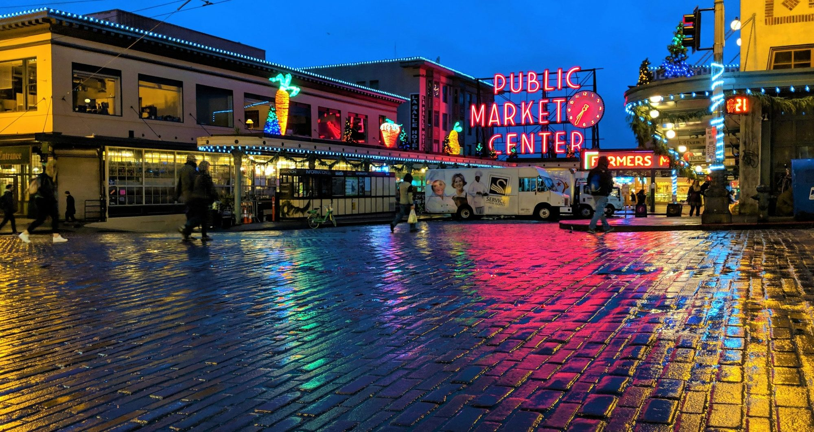

Washington · Seattle
Best things to do in Seattle
Market early, one Seattle Center ticket, and dinner in a neighborhood.

Do the market early, walk the water, and buy one Seattle Center ticket. The rest of the famous list is optional. r/Seattle threads send first-timers to Belltown or Lower Queen Anne because those walks are short. They do not tell you to spend the afternoon in the gum wall.
If you only have one day
- Pike Place Market, 85 Pike Street, when it opens, not at 1 p.m. The ordinance is August 5, 1907. Opening day was August 17. The market’s site calls the district nine acres and posts seasonal street rules. Read those. Hours are on the site.
- Skip the first Starbucks as a destination. The line is the attraction. If you want a sit-down meal in the market, Matt’s in the Market is upstairs at 94 Pike Street. Tripadvisor reviews say it is easy to miss: small sign, up the stairs. Do not plan the morning around Ellenos. A 2026 directory page marks a Pike Place address for the yogurt shop as permanently closed, while Google’s waterfront result still shows reviews. Confirm the door before you cross the market for a cup.
- Walk north to Olympic Sculpture Park, 2901 Western, free, about 30 minutes before sunrise to 30 minutes after sunset. Do not climb the art. The garage is paid. Walk.
- One ticket at Seattle Center, 305 Harrison, or none. The Space Needle at 400 Broad lists a general-admission range that was $35 to $55 on October 28, 2026, and hours that change by day. Chihuly and MoPOP are separate tickets. Doing all three is how the day disappears. Kerry Park is the free view, and it is up the Queen Anne hill.
Ellenos is the yogurt counter people still name. The line below is only the Google score that was readable. It is not a promise the stall is open.
What people get wrong
They stay for the Needle and never eat in a neighborhood. Capitol Hill is the night. Dick’s Drive-In at 115 Broadway E is the cheap burger. Yelp is much cooler than Google, which is the split you should expect at a civic burger stand. Taurus Ox, 903 19th Ave E, is the Capitol Hill restaurant with the higher scores. Tripadvisor did not show a clear bubble score, so that site is left off. Ballard is the other dinner, and it is not on the 1 Line.
The Walrus and the Carpenter, 4743 Ballard Ave NW, is the oyster counter people line up for. A June 2026 Tripadvisor review praises the food, calls the chairs tiny, and says the bill included a 22 percent charge. Go early or put your name in and leave. It is not a quick add-on to a Needle ticket.
Leave downtown on purpose
The ferry to Bainbridge is the half day on the water. Walk on. Check WSDOT the morning you go. Do not also do the locks. The Hiram M. Chittenden Locks, 3015 NW 54th, are free on the grounds from 7 a.m. to 9 p.m., with a fish ladder. Parking is the city’s paid lot, Sundays and holidays free. A r/Seattle comment from 2023 tells visitors in Belltown to take that ferry rather than hunt for more downtown sights. That is the right instinct.
Discovery Park is the Magnolia hike people mention when they want trees without leaving the city. The Seattle parks page did not load for this check, so confirm the trail before you cross town for it. Do not schedule it against a flight.
The train
The 1 Line stops at SeaTac, Capitol Hill, Westlake, Pioneer Square, and Stadium. It does not stop in Ballard, Fremont, or Queen Anne.
Sources
Hours, fares, and closures change. Ratings are the scores and review counts read in October 2026. Community notes are paraphrased from threads linked below.
- Pike Place Market
- Seattle Art Museum, Olympic Sculpture Park
- Seattle Center
- Space Needle
- Visit Seattle, neighborhoods
- Visit Seattle, Queen Anne
- Chittenden Locks
- Washington State Ferries
- Sound Transit 1 Line
- The Edgewater, official facts page
- r/SeattleWA, where to stay, March 2024
- r/SeattleWA, SLU vs Pioneer Square, May 2026
- r/Seattle, Belltown or SLU, March 2023
Last checked: October 2026.